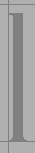
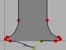
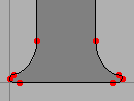
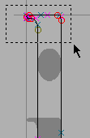
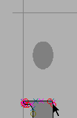
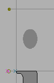
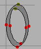
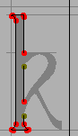
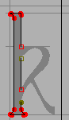

Tutorial #3
- Font Creation
- Creating a glyph (tracing outlines)
- Create glyph outlines using spiro points
- Importing a glyph from InkScape (or Illustrator, or some other vector editor)
- Navigating to other glyphs
- On to the next glyph (consistent directions)
- Consistent serifs and stem widths
- Building accented glyphs
- Building a ligature
- Lookups and features
- Examining metrics
- Kerning
- Glyph variants
- Anchoring marks
- Conditional features
- Checking your font
- Generating it
- Font Families
- Final Summary
- Bitmap strikes
- Scripting Tutorial
- Notes on various scripts
Creating letters with consistent stem widths, serifs and heights.
Many Latin (Greek, Cyrillic) fonts have serifs, special terminators at the end of stems. And in almost all LGC fonts there should only be a small number of stem widths used (ie. the vertical stem of "l" and "i" should probably be the same).
FontForge does not have a good way to enforce consistency, but it does have various commands to help you check for it, and to find discrepancies.
Let us start with the letter "l" and go through the familiar process of importing a bitmap and defining it's outline.
 |
 |
 |
|
| The imported image | Use the magnify tool to examine the bottom serif, and note that it is symmetric left to right. | Outline the right half of the serif | select the outline, invoke Edit -> Copy then Edit
-> Paste, and finally Element -> Transform
-> Transform and select Flip (from the pull
down list) and check Horizontal |
 |
 |  |
|
| Drag the flipped serif over to the left until it snuggles up against the left edge of the glyph | Deselect the path, and select one end point and drag it until it is on top of the end point of the other half | Finish off the glyph | |
 |
 |
||
| But let's do two more things. First let's measure the stem width, and second let's mark the height of the "l" | Select the ruler tool from the tool palette, and drag it from one edge of the stem to the other. A little window pops up showing the width is 58 units, the drag direction is 180 degrees, and the drag was -58 units horizontally, and 0 units vertically. | Go to the layers palette and select the Guide radio box (this makes the guide layer editable). Then draw a line at the top of the "l", this line will be visible in all glyphs and marks the ascent height of this font. | |
Now let's do "i". This glyph looks very much like a short "l" with a dot
on top. So let's copy the "l" into the "i"; this will automatically give
us the right stem width and the correct advance width. The copy may be done
either from the font view (by selecting the square with the "l" in it and
pressing Edit->Copy) or from the outline view (by
Edit->Select->Select All and
Edit->Copy). Similarly the Paste may be done either in the
font view (by selecting the "i" square and pressing
Edit->Paste) or the outline view (by opening the "i" glyph
and pressing Edit->Paste).
|
 |
 |
 |
| Import the "i" image, and copy the "l" glyph. | Select the top serif of the l | drag it down to the right height | go to the guide layer and add a line at the x-height |

Let's look briefly
back at the "o" we built before. You may notice that the "o" reaches a little
above the guide line we put in to mark the x-height (and a little below the
baseline). This is called overshoot and is an attempt to remedy an optical
illusion. A curve actually needs to rise about 3% (of its diameter) above
the x-height for it to appear on the x-height.
Let's look at "k". Again we will copy an "l" into it and import an appropriate image.
|
|
 |
| Import the "k" image and copy the "l" glyph. Note that the x-height line matches the "k" (as we would hope). Also note that the width of the "l" is inappropriate for "k" so we'll have to select it and drag it over. | Select the knife tool from the palette, and cut the stem of the "l" shape at appropriate points for "k". | Remove the splines between the cut points. An easy way to do this is
to grab the spline itself, (which selects its end points) and then do
Edit -> Clear. |
 |
|
|
Select the end points and convert them into corner points with Point
-> Corner. |
Then draw in the outer contour. | And the inner contour. Finally do an Edit -> Select -> Select
All and an Element -> Correct Direction. |